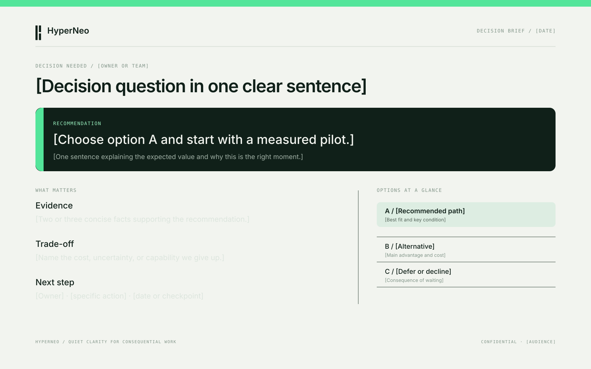
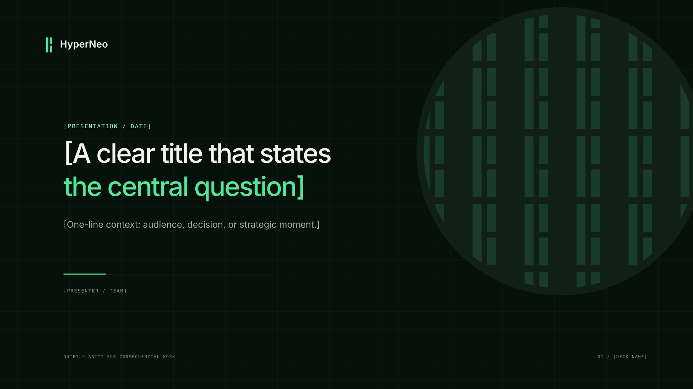
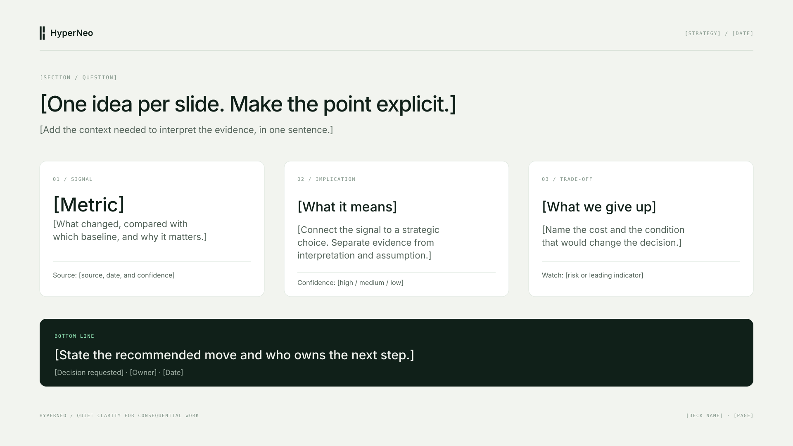
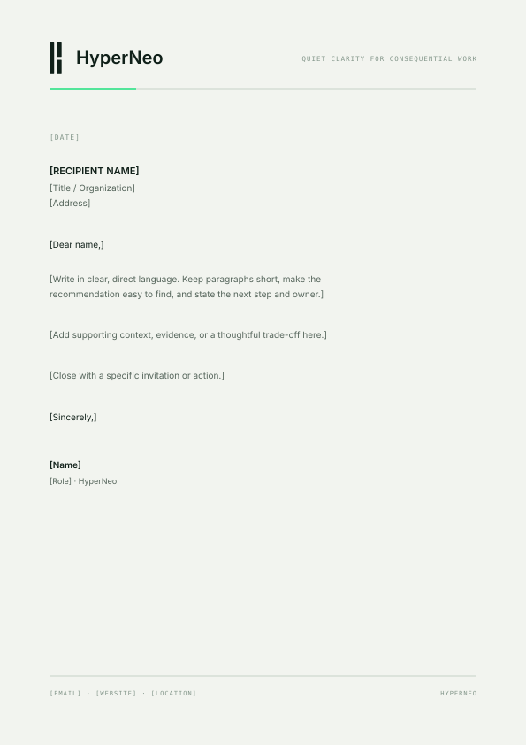
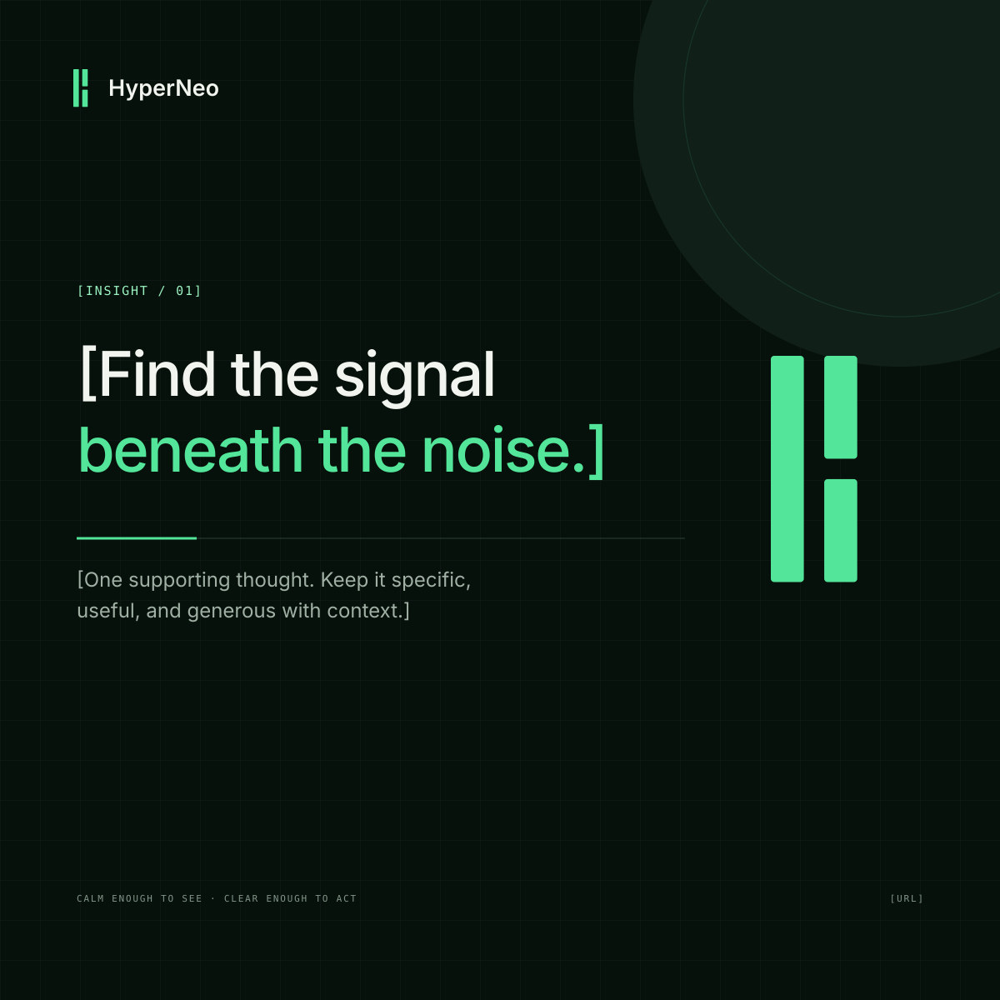

Executive decision brief
A one-page recommendation with evidence, trade-off, alternatives, owner, and next step.
16:10 · 1600 × 1000HyperNeo / Visual identity 01
Editable SVG starting points for executive communication. Open a file in Figma, Illustrator, or another vector editor, then replace every bracketed placeholder and confirm typography before export.

A one-page recommendation with evidence, trade-off, alternatives, owner, and next step.
16:10 · 1600 × 1000
A restrained opening slide for a strategic review or consequential decision.
16:9 · 1920 × 1080
One idea, supporting evidence, implication, trade-off, and bottom line.
16:9 · 1920 × 1080
A quiet, legible document page with a compact mark and broad writing area.
A4 portrait ratio · 595 × 842
A single useful idea with enough open space to read at feed scale.
Square · 1200 × 1200Use these layouts as structure, not as a replacement for sound analysis. Keep claims attributable, mark assumptions, and preserve the audience's ability to judge the evidence. Brand material usage is governed by the all-rights-reserved notice.